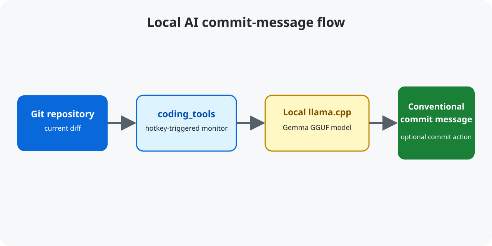

Local AI Git Commit Message Generator
coding_tools analyzes Git diffs locally and suggests conventional commit messages for developers. It supports one or more repositories and keeps the model in your own llama.cpp server.

Quickstart
conda create --name ct python=3.12.8 -y
conda activate ct
python3 main.py --helpBuild or install a local llama.cpp server, load the documented Gemma GGUF model, then run python3 main.py /path/to/repository.
What the repository contains
- Repository monitoring and diff handling in
src/. - Model settings in
data/model_config.py. - Evaluation and fine-tuning material under
evals/andfinetuning/.
FAQ
Does the tool commit automatically?
The documented purpose is to generate a commit-message suggestion. Review the result before making a commit.
Can it work without CUDA?
The repository documents CUDA/GPU acceleration for the local llama.cpp model; consult the README for the supported setup.
Where are the full setup instructions?
See the repository README for server, model, and configuration details.